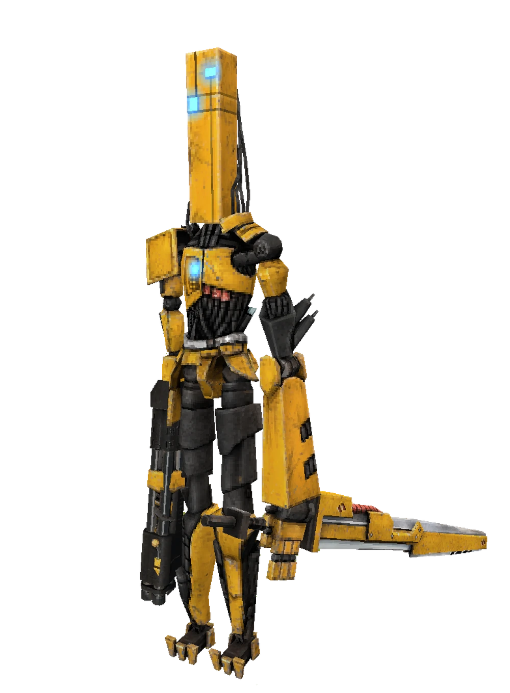
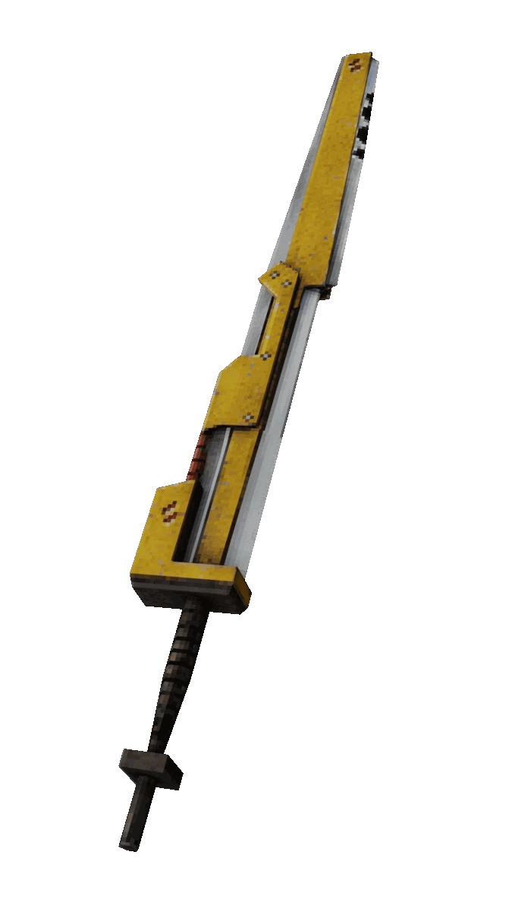

The Swordsmachine is a tall, humanoid machine with yellow armor and black joints, bearing burn marks from battles in Hell. It has a rectangular head with mismatched glowing blue eyes. The machine wields a shotgun as its lower right arm and a large, motorized sword in its left hand that emits a glowing orange light during swings.

Combat Overview
The Swordsmachine is a fast, relentless opponent with two distinct phases:
Phase 1: Combines melee sword combos and ranged shotgun blasts.
Phase 2: Focuses on aggressive sword-based attacks after losing its shotgun.
Parrying plays a crucial role in defeating the Swordsmachine. While parried attacks leave it open to damage, they also enrage the machine, making its attacks faster and more frequent. Handle its enraged state with caution.
Phase 1: Sword and Shotgun
During this phase, the Swordsmachine uses a mix of melee and ranged attacks to corner and overwhelm you.
Key Attacks
Sword Combo: A three-hit melee combo. Each swing can be parried during a brief telegraphed window marked by a "pling" sound.
Jump Slash: A leaping melee attack with a similar "pling" telegraph. This can also be parried.
Shotgun Blast: Fires at range, telegraphed by a "pling" sound before the shot. Parrying the pellets does not enrage the Swordsmachine.
Stick close to the Swordsmachine to cancel its shotgun blasts, and parry its melee attacks to create openings. Avoid unnecessary aggression to prevent being overwhelmed when it enrages.
Phase 2: Blades Unleashed
After losing its shotgun, the Swordsmachine becomes more dangerous, gaining two new ranged sword attacks in addition to its melee capabilities.
Key Attacks
Spinning Sword Throw: Throws its sword in a wide arc, targeting your movement. The sword can be parried at any point to deal 20 damage and interrupt the attack.
Spiraling Sword Throw: Throws its sword in a looping pattern around itself. Parry the windup or the sword itself to counter this move.
During this phase, the Swordsmachine is more vulnerable during its attack windups. Stay mobile to avoid the sword throws, and use precise parries to capitalize on its mistakes.

Strategies & Tips
Stay Mobile: The Swordsmachine’s speed and aggression require constant movement to evade its attacks.
Use Parry Windows: Mastering parry timing is essential, especially against its melee combos and sword throws.
Beware of Enrage: Parrying enrages the Swordsmachine, increasing its attack speed and frequency. Prepare to dodge quickly after parries.
Phase 2 Openings: During sword throws, the Swordsmachine is temporarily vulnerable. Use this window to deal significant damage.
Weapon Choices: The Sharpshooter Revolver and Nailgun are effective for burst damage and sustained fire during its vulnerable moments.